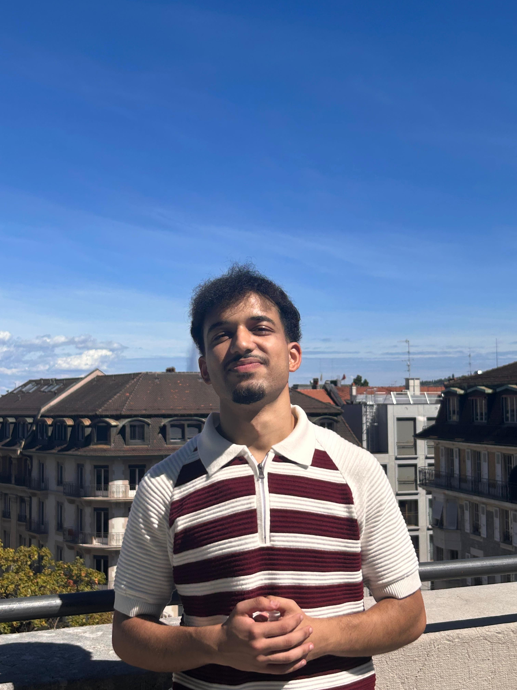

I'm an AI & Machine Learning engineering student at INPT, Rabat, driven by a passion for building intelligent systems and pushing the boundaries of data-driven technologies.
From developing Machine Learning models and Deep Learning architectures to designing modern LLM-based systems (RAG, embeddings, pipelines), I focus on creating scalable, efficient, and impactful AI solutions.
I enjoy working across the full pipeline — from data preprocessing and feature engineering to model training and deployment using tools like FastAPI and Streamlit.
My approach combines mathematical rigor, engineering discipline, and curiosity — always aiming to understand not just how systems work, but how to improve them.
My long-term goal is to contribute to cutting-edge AI ecosystems, building intelligent systems that are not only powerful, but also reliable, efficient, and well-engineered.
Whether it's training models, designing LLM pipelines, or solving complex data problems, I strive to create meaningful impact — one model, one system at a time.
I believe in the power of discipline, ambition, and justice. When things feel unfair, I respond not with resignation, but by pushing myself even harder.
My learning philosophy is based on taking initiative. I don’t wait for perfect conditions — I create them through projects, research, and experimentation.
Above all, I strive to make my work meaningful: not just technically impressive, but useful to people, respectful of ethical principles, and aligned with my values.